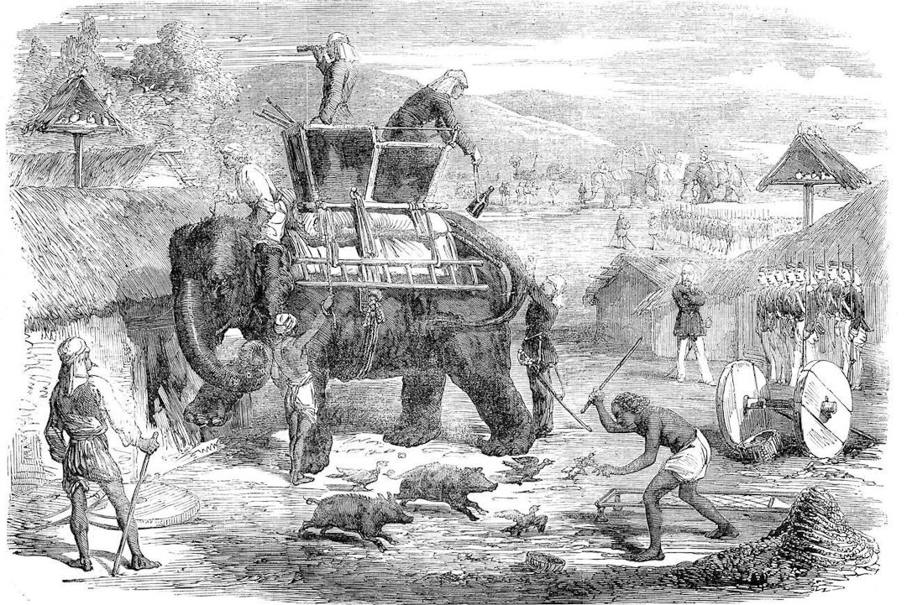
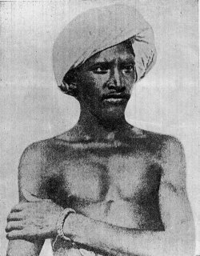

Image Title
Zoom with wheel • Drag to pan • Click reset
100%
Modern Indian History • Module 15: Colonial Economy & Revolts
British colonial hegemony transformed India from a premier exporter of world-class manufactures into an impoverished agrarian colony supplying raw materials for British factories. Unrelenting revenue extraction through the Zamindari, Ryotwari, and Mahalwari systems, combined with uncompensated economic drain, ignited fierce resistance from Santhals, Mundas, Kols, and rebellious peasantry across the subcontinent.

Sidhu & Kanhu's fierce uprising in Damin-i-Koh against colonial money-lenders and police extortion.
The Drain of Wealth & De-Industrialization
Indian nationalist economists uncovered the systematic siphon of Indian resources to Great Britain without any equivalent economic or material return.
Author of 'Poverty and Un-British Rule in India' and pioneer of the Drain Theory.
Before British rule, India produced ~25% of global manufactured goods. One-way free trade allowed machine-made Manchester textiles to enter India duty-free, while exorbitant tariffs (up to 80%) blocked Indian textiles entering Britain.
Famous artisanal hubs (Dacca muslin, Murshidabad silk, Surat brocade) were ruined. Millions of displaced weavers were forced onto overcrowded land, causing chronic agricultural distress and deadly famines.
The Three British Land Revenue Systems
To maximize tax extraction from the soil, the British divided India into three rigid fiscal experiments: Zamindari, Ryotwari, and Mahalwari.
Bengal, Bihar, Orissa, Varanasi
Madras, Bombay, Assam, Coorg
Gangetic Valley, NWFP, Punjab
| System | Introduced By | Coverage Area | Ownership Recognized | State Revenue Demand |
|---|---|---|---|---|
| Zamindari (Permanent) | Lord Cornwallis (1793) | Bengal, Bihar, Orissa, Varanasi (19%) | Zamindars / Landlords | Fixed perpetually (10/11th to State) |
| Ryotwari | Thomas Munro & Read (1820) | Madras, Bombay, Assam (51%) | Individual Ryots (Cultivators) | 45% to 55% of gross produce (Periodic) |
| Mahalwari | Holt Mackenzie & Bird (1822/33) | Gangetic Valley, Punjab, NWFP (30%) | Village Community / Mahals | 50% to 66% of rental value (Periodic) |
Tribal Uprisings & The Forest Rebellions
British forest laws, encroachment of ancestral lands by Dikus (outsiders), forced labour (Beth Begari), and usurious moneylenders provoked violent tribal insurrections across the country.

Leader of the Great Tumult (Ulgulan) and defender of tribal land rights.
Led by Sidhu and Kanhu Murmu. Mobilized over 10,000 Santhals against British revenue police, corrupt Darogas, and moneylenders. Enacted Act 37 of 1855 creating the separate Santhal Parganas district.
Led by Birsa Munda. Fought for restoration of Khuntkatti (ancestral collective landownership). Birsa died in Ranchi jail (9 June 1900). Prompted enactment of the landmark Chotanagpur Tenancy Act (1908) banning transfer of tribal lands to non-tribals.
Led by Buddhu Bhagat and Madara Mahato in Chotanagpur against British transfer of lands to outsider Sikh and Muslim farmers.
Led by Tirut Singh in the Meghalaya hills against British military road construction through Khasi territory connecting Brahmaputra to Sylhet.
Led by Gomdhar Konwar in Assam against British annexation after First Anglo-Burmese War (Treaty of Yandaboo 1826).
Led by Chittur Singh and Umaji Naik in Western Ghats / Poona against heavy British land assessments.
Major Peasant Movements (1763–1875)
Oppressed by European plantation monopolies, extortionate zamindars, and moneylenders, Indian peasants waged resolute legal and armed battles.
Triggered by the catastrophic Bengal Famine of 1770 and British restrictions on pilgrims. Dispossessed peasants joined Hindu Sanyasis and Muslim Madari Fakirs led by Majnu Shah, Chirag Ali, Bhawani Pathak, and Devi Chaudhurani.
Led by brothers Digambar Biswas and Bishnu Biswas in Govindpur (Nadia). Peasants refused to plant indigo under the exploitative Dadni system (fraudulent cash advances) and defended villages against planters' lathiyals.
Ryotwari peasants in Maharashtra suffered from exorbitant revenue demands and catastrophic drop in cotton prices after the American Civil War. Maratha farmers rose against Gujarati and Marwari moneylenders (*Sawkars*), publicly burning debt bonds and account books.
Rebellion of impoverished Muslim cultivators (Moplahs) against oppressive Hindu landlords (Jenmis) backed by the British administration. Climaxed in the massive 1921 Malabar rebellion during the Khilafat-Non Cooperation movement.
Semi-religious sect founded by Karam Shah among the Hajong and Garo tribes. His son Tipu Shah organized armed resistance against illegal rents levied by local Zamindars, capturing Sherpur in 1825.
Founded by Haji Shariatullah and led by his son Dudu Mian (Muhsin-ud-Din Ahmad). Mobilized Muslim peasantry against Hindu zamindars and European indigo planters, declaring that "all land belongs to God and no rent should be levied".
Interactive Recall & Examination Drill
Cement high-yield prelims facts on the Drain of Wealth, British land settlements, Santhal rebellion, and Birsa Munda.
Loading question...
Loading answer...
5 High-Probability Questions for UPSC, APSC & State PSCs